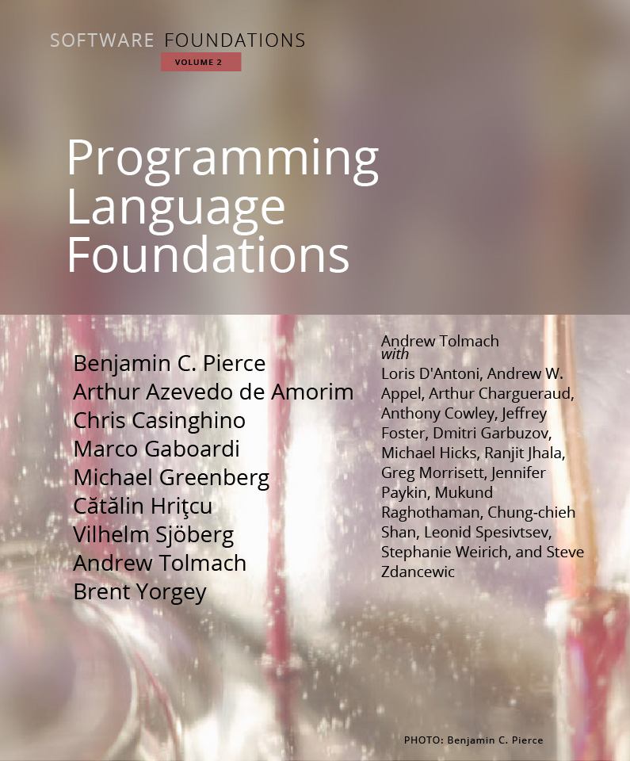

The Software Foundations series is a broad introduction to the mathematical underpinnings of reliable software.
The principal novelty of the series is that every detail is one hundred percent formalized and machine-checked: the entire text of each volume, including the exercises, is literally a "proof script" for the Coq proof assistant.
The exposition is intended for a broad range of readers, from advanced undergraduates to PhD students and researchers. No specific background in logic or programming languages is assumed, though a degree of mathematical maturity is helpful. A one-semester course can expect to cover Logical Foundations plus most of Programming Language Foundations or Verified Functional Algorithms, or selections from both.
| Volume 1 |
|
Logical Foundations, serves as the entry-point to the series. It covers functional programming, basic concepts of logic, computer-assisted theorem proving,and Coq. |
| Volume 2 |
|
Programming Language Foundations, surveys the theory of programming languages, including operational semantics, Hoare logic, and static type systems.  |
| Volume 3 |
|
Verified Functional Algorithms, shows how a variety of fundamental data structures can be mechanically verified. |